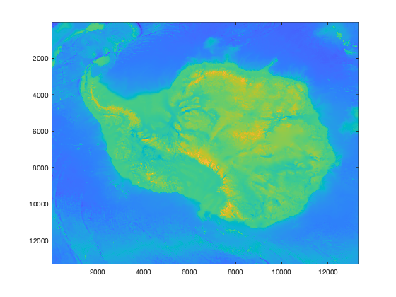
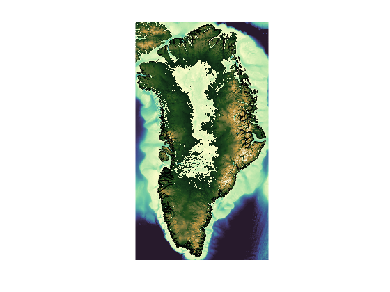
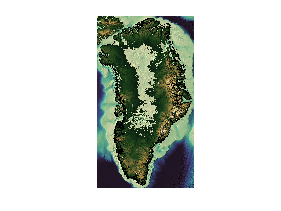
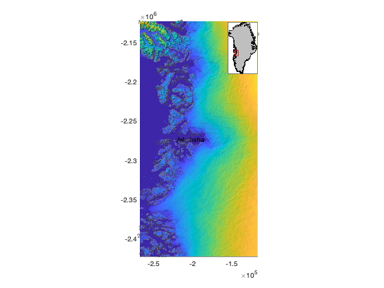
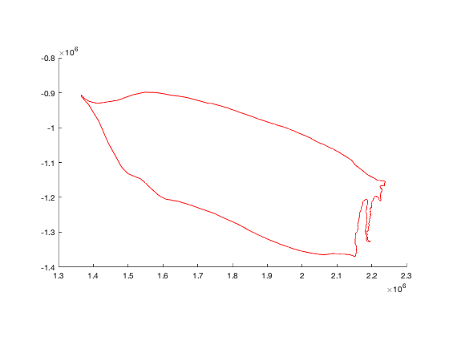
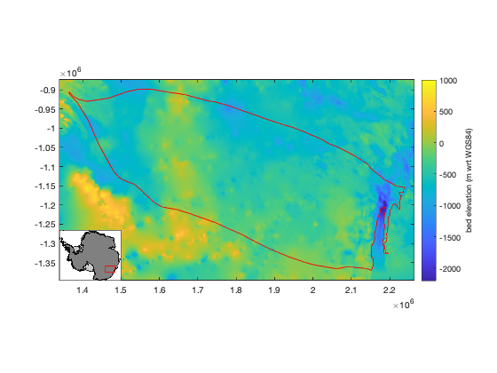
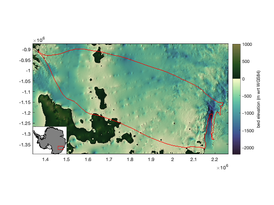

bedmachine_data documentation
bedmachine_data loads data from Morlighem et al.'s BedMachine datasets.
See also bedmachine, bedmachine_interp and bedmachine_profile.
Contents
Requirements
This function requires a set of Matlab tools and a Bedmachine dataset, and both will depend on where you're working. Get them here:
- For Greenland:
- For Antarctica:
Syntax
Z = bedmachine_data(variable) Z = bedmachine_data(variable,lati,loni) Z = bedmachine_data(variable,xi,yi) Z = bedmachine_data(...,'buffer',extrakm) Z = bedmachine_data(...,IceSheet) Z = bedmachine_data(...,'datum',datum) [Z,x,y] = bedmachine_data(...) [Z,Lat,Lon] = bedmachine_data(...,'geo') [~,x,y] = bedmachine_data(outline) [~,lat,lon] = bedmachine_data(outline,'geo')
Description
Z = bedmachine_data(variable) loads a specified variable for the whole ice sheet, with elevations relative to the EIGEN-EC4 geoid. The variable can be:
- 'mask' 0 = ocean, 1 = ice-free land, 2 = grounded ice, 3 = floating ice, 4 = non-Greenland land
- 'surface' meters relative to EIGEN-EC4 geoid.
- 'thickness' meters
- 'bed' meters relative to EIGEN-EC4 geoid.
- 'errbed' meters
- 'source' Greenland: 0 = none, 1 = gimpdem, 2 = Mass conservation, 3 = synthetic, 4 = interpolation, 5 = hydrostatic equilibrium, 6 = kriging, 7 = RTOPO-2, 8 = gravity inversion, 10+ = bathymetry data)
- 'source' Antarctic: 1 = REMA/IBCSO, 2 = Mass conservation, 3 = interpolation, 4 = hydrostatic, 5 = Kriging, 6 = gravity inversion
- 'geoid' meters above WGS84 ellipsoid
- 'base' meters base of the ice sheet (bottom of ice shelves, but same as bed over grounded ice.)
- 'wct' meters water column thickness (derived, not an official BedMachine product.)
- 'taf' meters thickness above flotation (derived, not an official BedMachine product.)
- 'flex' dimensionless coefficient of tidal flexure (can slightly exceed 1; see Vaughan 1995 or Holdsworth 1969; derived, not an official BedMachine product; Requires Image Processing Toolbox. )
- 'head' meters freshwater equivalent, static pressure head (derived, not an official BedMachine product.)
Z = bedmachine_data(variable,lati,loni) returns only enough BedMachine data to fully encompass a set of points given by geo coordinates lati,loni. This is a good way to save computer memory, only loading, analyzing, and plotting the data you need to work in a region of interest.
Z = bedmachine_data(variable,xi,yi) As above, but for polar stereographic coordinates xi,yi in meters (ps70 for Greenland; ps71 for Antarctica). The function automatically determines whether input coordinates are geo or polar stereographic via the islatlon function.
Z = bedmachine_data(...,'buffer',extrakm) as above, but adds a buffer around the input coordinates. This option is useful for loading only the data in your region of interest, plus a little extra around the sides for good measure.
Z = bedmachine_data(...,IceSheet) specifies either 'greenland' or 'antarctica' (default).
Z = bedmachine_data(...,'datum',datum) specifies a datum as either 'geoid' (default) or 'ellipsoid' for wgs84.
[Z,x,y] = bedmachine_data(...,'xy') returns polar stereographic meters (ps70 for Greenland; ps71 for Antarctica) as 1d arrays x,y.
[Z,Lat,Lon] = bedmachine_data(...,'geo') returns gridded geo coordinates corresponding to each pixel in Z.
[x,y] = bedmachine_data(outline) gives the (derived) polar stereographic coordinates of any of these outlines:
- 'gl' grounding line
- 'coast' coast line
- 'hl' approximate hydrostatic line given by flex=0.99.
[lat,lon] = bedmachine_data(outline,'geo') as above, but returns geographic coordinates.
Example 1: Simplest case
The simplest way to load BedMachine data is to just specify which variable you want to load, like this:
bed = bedmachine_data('bed');
imagesc(bed);
 Example 2: Making the full continent manageable
But of course you'll want to know where those points belong on the map so get the polar stereographic coordinates like this:
[bed,x,y] = bedmachine_data('bed','greenland');
You may find that the full continent of data at the native 500 m resolution is rather unwieldy to work with. Simply loading the nearly 200 million data points takes several seconds on my ancient laptop.
If you're making a map of the whole continent, keep in mind that Greenland's 18,000 by 10,000 points is more pixels than can possibly be displayed on any modern computer screen, so we can probably do just fine if we scale down the full dataset by a factor of 10, and still get a high-res image of the ice sheet.
To downscale the dataset I recommend imresize, which is a standard Matlab function and it performs antialiasing before downscaling. Here's what it looks like if we downscale the whole continent by a factor of 10. Instead of the default parula colormap I'm using Fabio Crameri's topographic colormap, which is perceptually uniform and draws a clear distinction between regions above and below sea level.
sc = 0.1; % scale for resizing the grid imagesc(imresize(x,sc),imresize(y,sc),imresize(bed,sc)) axis xy image off caxis([-1 1]*2500) cmocean topo greenland('k') % adds a black grounding line
Add a little relief shading if you like:
shadem(3,[225 80])
Example: Jakobshavn Glacier:
The BedMachine datasets are quite large. The Greenland and Antarctic datasets each have about 200 million grid cells. If you're focused on a small region you'll find it's much faster and uses much less computer memory if you only load the data you need. Here we'll load all the data around Jakobshavn Glacier.
Jakobshavn Glacier is located at (69.167 N,49.833 W). Load all the Bedmachine data centered on that location, plus 75 km of data on each side and 150 km of data on top and bottom, to make a final grid size of 150 km by 300 km:
[Z,Lat,Lon] = bedmachine_data('surface',69.167,-49.833,'buffer',[75 150],'geo'); figure pcolorpsn(Lat,Lon,Z) axis tight scalebarpsn('location','se') textpsn(69.167,-49.833,'Jakobshavn Gl.','fontangle','italic') shadem(2,[225 60]) % applies hillshade mapzoompsn('ne') % creates an inset map [C,h] = contourpsn(Lat,Lon,Z,'color',.5*[1 1 1]); % adds contour lines clabel(C,h,'labelspacing',1e3,'color',.3*[1 1 1],'fontsize',8)
Sometimes your region of interest is best defined by where you have data. For example, you're interested in the ice basin that drains through Moscow University Ice Shelf. Load the Moscow basin data using antbounds_data.
[lat,lon] = basin_data('imbie refined','Moscow'); figure plotps(lat,lon,'r')
Now for whatever type of analysis you're doing, perhaps you decide you just want all the bed elevation data in the Moscow ice basin, plus about 25 km on all sides for good measure. Here's how to load just enough data to encompass your lat,lon dataset (the basin boundaries in this case) and add a 25 km buffer around it:
[bed,x,y] = bedmachine_data('bed',lat,lon,'antarctica',... 'buffer',25,'datum','ellipsoid'); imagesc(x,y,bed) axis xy image % orients axis correctly & removes whitespace hold on plotps(lat,lon,'r') % plots basin outline cb = colorbar; ylabel(cb,'bed elevation (m wrt WGS84)') mapzoomps('sw') caxis([-2200 1000])
Now that's the bed elevation data with respect to WGS84 and it looks decent. However, I'd like to point out what can be learned by playing with hillshade. With any gridded dataset, I always recommend calling shadem('ui'), which starts a user interface, letting you click around on the map to change light angles, or press up the up and down keys to change the exaggeration of the effect. Here are some shadem settings that look okay for this map. Also I'm gonna set the colormap to the cmocean topographic color scheme, using the 'pivot' option to ensure the zero point is at zero elevation.
shadem(2,[225 80]) cmocean('topo','pivot')
In the map above, you might notice some interesting features that appear after adding shadem. Note the pearl-necklace patterns that radiate outward from Casey Station (beyond the right edge of the map). Those patterns are instantly recognizable as a gridding effect that results when survey flight lines are sparse. The surface may be locally overfit close to the flight lines, but the large smooth areas between flight lines get smeared out because no data are available to constrain the gridding.
The necklace effects we see in the map above do not indicate that anything went wrong with the gridding process, but do give you an idea of where we actually have ice thickness data, and where things have been filled in by interpolation.
Now, just as a fun exercise, let's load BedMachine surface data and plot it as contour lines every 500 m, but only plot contours within the bounds of the Moscow University Ice Shelf basin. We'll also do someting slightly different to load the data this time--instead of entering the geo coordinates of the basin outline and specifying a buffer distance, we can just load enough data to fill the axis limits of the map above, using xlim and ylim. Here's how:
% Load surface data: [sfz,LAT,LON] = bedmachine_data('surface',xlim,ylim,'antarctica',... 'datum','ellipsoid','geo'); % Mask out surface data outside the basin: sfz(~inbasin(LAT,LON,'imbie refined','moscow')) = nan; % Plot and label contour lines: [C,h] = contourps(LAT,LON,sfz,0:500:10000,'k'); clabel(C,h,'labelspacing',1e3) caxis([-2200 1000])

Citing this dataset
If you use BedMachine data, please cite the Morlighem paper listed below. And if this function is useful for you, please do me a kindness and cite my Antarctic Mapping Tools paper.
Morlighem M. et al., (2017), BedMachine v3: Complete bed topography and ocean bathymetry mapping of Greenland from multi-beam echo sounding combined with mass conservation, Geophys. Res. Lett., 44, doi:10.1002/2017GL074954.
Morlighem, M., E. Rignot, T. Binder, D. D. Blankenship, R. Drews, G. Eagles, O. Eisen, F. Ferraccioli, R. Forsberg, P. Fretwell, V. Goel, J. S. Greenbaum, H. Gudmundsson, J. Guo, V. Helm, C. Hofstede, I. Howat, A. Humbert, W. Jokat, N. B. Karlsson, W. Lee, K. Matsuoka, R. Millan, J. Mouginot, J. Paden, F. Pattyn, J. L. Roberts, S. Rosier, A. Ruppel, H. Seroussi, E. C. Smith, D. Steinhage, B. Sun, M. R. van den Broeke, T. van Ommen, M. van Wessem, and D. A. Young. 2019. Deep glacial troughs and stabilizing ridges unveiled beneath the margins of the Antarctic ice sheet, Nature Geoscience. doi:10.1016/j.cageo.2016.08.003.
Greene, C. A., Gwyther, D. E., & Blankenship, D. D. Antarctic Mapping Tools for Matlab. Computers & Geosciences. 104 (2017) pp.151-157. doi:10.1016/j.cageo.2016.08.003.
Author Info
This function and supporting documentation were written by Chad A. Greene of the University of Texas at Austin, October 2018.